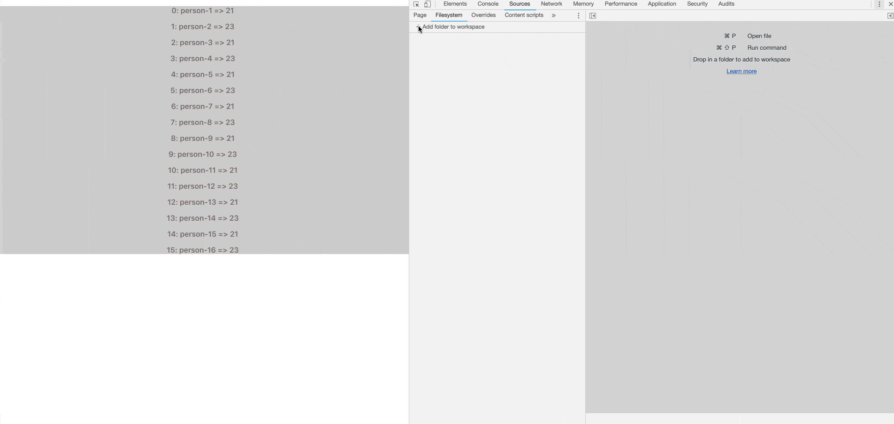
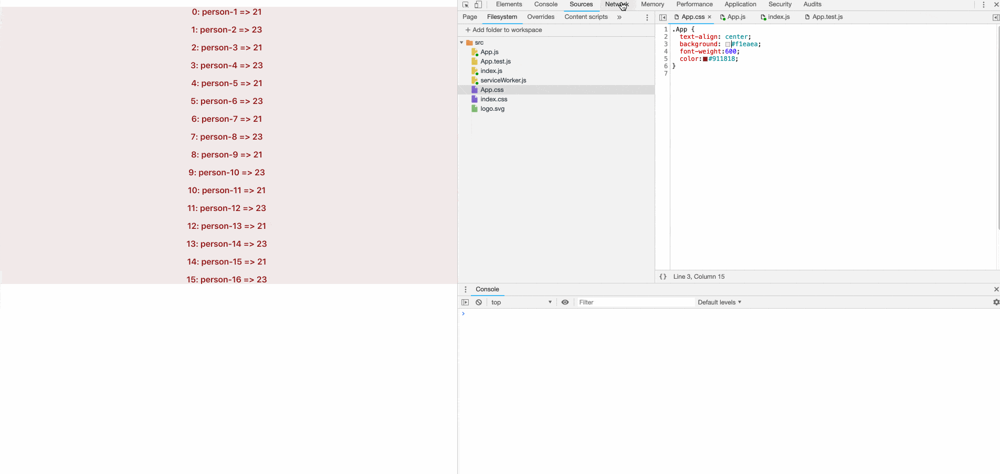
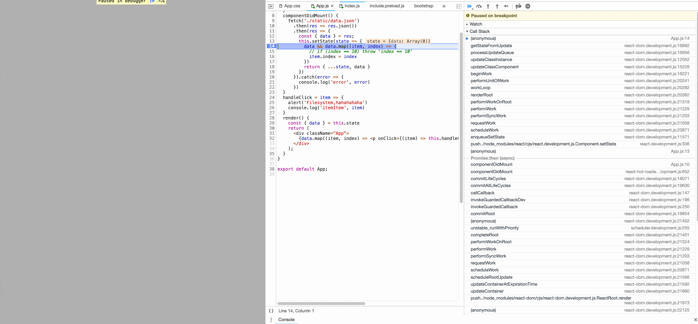
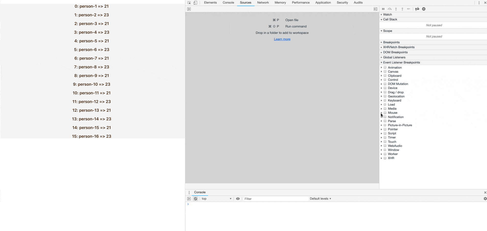
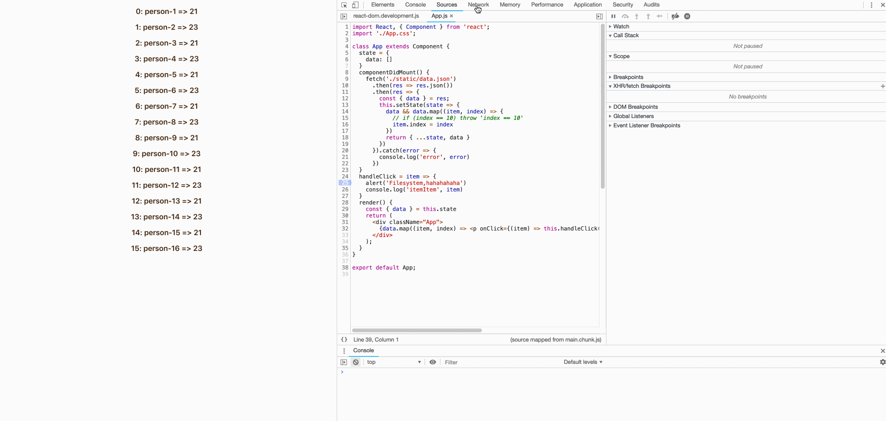

Chrome DevTools 调试使用 demo地址
作为前端开发者，免不了要和 DevTools 打交道,熟练的使用 DevTools 能够大大提高我们的工作效率。然而，开发者工具的使用并没有得到足够的重视。
工欲善其事必先利其器，更何况，工具的学习成本比专业技能的学习成本小的多。
Chrome 有不同版本，如果想第一时间体验一些新的功能可以使用除稳定版本的其它版本。
本次主要围绕着 Workspace 和 Blackbox script 这两点来感受它们带来的便利。
Workspace
Workspace 主要还是将浏览器关联本地文件，使得浏览器拥有读写本地文件的权利。
随着前端的发展，业务和逻辑也越来越复杂。还好打包压缩工具应运而生，还有 sourceMap 的使用，又让我们从压缩混淆的代码中有了看源码的体验。
此时我们依然可以 DevTools 里 Sources 页签里的 Filesystem 页签添加本地文件夹，从浏览器里修改本地文件。

这个功能或许还有点用，但是还是不如人意。因为修改后的文件需要刷新后才能显示变动，而文件被更改后，打包工具需要重新编译，编译时间或许很长或许很短，而且页面被被整体刷新了，给人一种很生硬的感觉。
不过，还好有 热组件替换 这么一说。给我们的应用程序加上这货之后，我们的开发将会更加丝滑😉。
热组件替换
以 create-react-app 为例🌰（最新版本），步骤如下。也可以看看👀官方怎么说react-hot-loader.
1⃣️：
1 | npm install react-hot-loader --save-dev |
2⃣️：在 entry 中添加 isEnvDevelopment && 'react-hot-loader/patch',
3⃣️：在 oneOf 中 babel-loader 的 plugins 中添加 ['react-hot-loader/babel'],
4⃣️：在入口文件添加以下内容
1 | import { AppContainer } from 'react-hot-loader' |
至此，热组件替换改造完成，让我们再次感受下。

通过以上展示，我们可以发现，整个界面只是局部被替换了，过渡得很自然。这应该才是我们想要的效果✨。插一句，在 Network 页签中，Preserve log 一定要勾选上☑️。这样的话，即使页面刷新了，也是有记录📝的，非常方便在页面跳转刷新时使用。
Blackbox script
如果说以上是提高了开发上的效率，那么这个 Blackbox script 功能将会在定位上省下不少时间。
在断点排查问题时，代码总会在不同的位置切换。但是，经常会遇到各种不是我们程序里的代码跳出来。不过，只要我们把该文件标记为 Blackbox script 时，下次就不会再出现了。当然这只是最基本的操作，要想充分利用这个功能，还是要配合其它功能的使用。
Call Stack
调用栈在排查问题是很有用的，我们知道，函数的执行是有执行上下文的，函数由最外层到最内层依次压入栈中，在执行的时候，依次从栈中弹出。这样我们就可以从最内层沿着链找到最外层。
排查错误时也是这个道理，我们经常遇到不知名的错误❌，可能是调用第三方的，也可能是底层，总之不是我们写的代码（我信你个鬼😏）。
遇到这种情况就可以尝试用调用栈的方法，既然执行了，肯定是有调用的地方，我们可以沿着链去找源头（十有八九是我们自己写的代码😏）。不过调用栈中可能混杂了不是我们自己写的函数，这时候 Blackbox script 就派上用场了。

Event Listener Breakpoints
可能在熟悉一个新的项目时，想知道某个 dom 绑定的处理事件。Sources 页签下的 Event Listener Breakpoints 可以定位到代码具体的位置，不过和上次一样，好多其它代码混淆视听，我们需要把它们标记为 Blackbox script。标记完后，下次就会直接在自己的代码里停住了。

Initiator
其实和 Event Listener Breakpoints 并排的 XHR/fetch Breakpoints 也很有用，不过和接下来要讲的功能比，就显得鸡肋了。
在 Network 页签中，记录的都是请求的数据。在开发的时候常遇到这两种情况，
1⃣️：接口报错，在 Network 页签中可以看到整个URL被标红了，要快速定位到调用接口的地方。
2⃣️：请求出去了，请看看响应时，如何处理数据。
其实，两个实质上都是一样，就是快速定位代码。快速定位在大型项目中还是挺麻烦的，除非业务比较熟，剩下只能全局搜索了。
还好，Network 页签下的 Initiator 也有类似调用栈的东西，我们可以在其列表中找到，Blackbox script 的功能依然时屏蔽无关的代码。

补充
除了以上还有很多调试技巧，
1⃣️：有时候我们看见了控制有错误❌输出，却不知道是哪里的问题。或者是控制有报错❌，但一闪而过，无法捕捉。这时候可以尝试使用异常断点的功能(最右➡️的那个)。倒数第二个，是用来恢复函数执行的，使断点不起作用。

2⃣️：数据量过大时，可能由于某一条数据的问题导致了页面渲染问题。如果打断点的话，数据量太大了，每一次都跳到循环的处理逻辑中会很麻烦。不过断点是支持条件断点的，还可以打印我们想要的变量（在最新的 Chrome dev版本中，已单独拎出来了）。

3⃣️：有时候页面加载过快，都来不及看明白页面是怎么展示的。比如跳转问题，比如模拟网速慢、电脑性能卡慢问题。（这里十有八九是并发引起的竞态问题😏）右下角 Oneline 可自选模式。

4⃣️：……